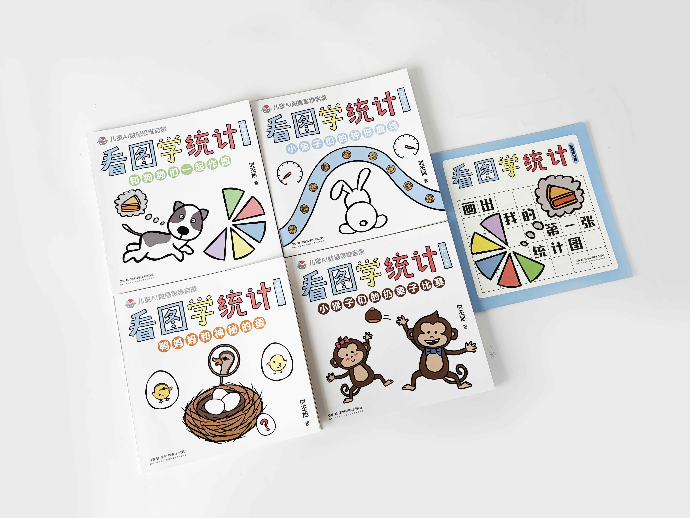

Research leadership
Vice Chair for Research, Duke Biostatistics & Bioinformatics; joint faculty across Biostatistics & Bioinformatics and Computer Science.
Department of Biostatistics & Bioinformatics and Department of Computer Science, Duke University
Statistics · machine learning · AI for science & health
I am a professor at Duke University working on the foundations, methodology, and applications of statistics and machine learning, with interests spanning generative AI, high-dimensional inference, tensor and low-rank learning, optimization, and health and biomedical data.
Appointments, service, awards, and training.
I am a tenured full professor with joint primary appointments in the Department of Biostatistics & Bioinformatics (B&B) and the Department of Computer Science at Duke University. I serve as Vice Chair for Research at Duke B&B. I hold secondary appointments in Duke Statistical Science and ECE.
I received my PhD from the University of Pennsylvania in 2015, advised by T. Tony Cai, and my bachelor's degree in mathematics from Peking University in 2010. Before joining Duke, I was an Assistant Professor of Statistics at UW–Madison.
Vice Chair for Research, Duke Biostatistics & Bioinformatics; joint faculty across Biostatistics & Bioinformatics and Computer Science.
Associate editor roles include The Annals of Statistics, the Theory & Methods and Applications & Case Studies sections of Journal of the American Statistical Association, Statistica Sinica, Statistics and Its Interface, ASA Discoveries, and Statistical Learning and Data Science.
Leo Breiman Junior Award (2026), ASA Fellow (2026), COPSS Emerging Leader Award (2024), AMIA Data Science Outstanding Paper Award (2023), IMS Tweedie Award (2022), ASA Noether Junior Award (2021), Bernoulli Society New Researcher Award (2021), and NSF CAREER Award (2020).
Current recruiting information.
Our group is actively looking for motivated members to work on (1) methodology and theory in machine learning and statistics and/or (2) applications in AI for Health. Prospective PhD students may apply through Duke programs in Biostatistics & Bioinformatics, Computer Science, Electrical & Computer Engineering, or Computational Biology & Bioinformatics.
Recent highlights

A bilingual illustrated statistics book series for young readers, introducing statistical ideas through stories and visual examples. Explore the book series →